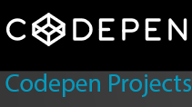
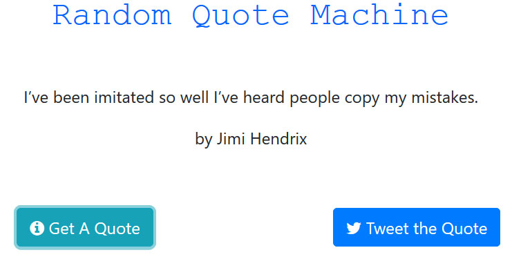

 EditB's CodePen Projects
Here are some CodePen projects I've created, using HTML, CSS, jQuery and React. Enjoy your browse and have a lovely day!
Javascript Calculator
User Stories:
- I can add, subtract, multiply and divide two numbers.
- I can clear the input field with a clear button.
- I can keep chaining mathematical operations together until I hit the equal button, and the calculator will tell me the correct output.
Simon Game
User Stories:
- I am presented with a random series of button presses.
- Each time I input a series of button presses correctly, I see the same series of button presses but with an additional step.
- I hear a sound that corresponds to each button both when the series of button presses plays, and when I personally press a button.
- If I press the wrong button, I am notified that I have done so, and that series of button presses starts again to remind me of the pattern so I can try again.
- I can see how many steps are in the current series of button presses.
- If I want to restart, I can hit a button to do so, and the game will return to a single step.
- I can play in strict mode where if I get a button press wrong, it notifies me that I have done so, and the game restarts at a new random series of button presses.
- I can win the game by getting a series of 20 steps correct. I am notified of my victory, then the game starts over.
Pomodoro Clock
User Stories:
- I can start a 25 minute pomodoro, and the timer will go off once 25 minutes has elapsed.
- I can reset the clock for my next pomodoro.
- I can customize the length of each pomodoro.
Wikipedia Viewer
User Stories:
- I can search Wikipedia entries in a search box and see the resulting Wikipedia entries.
- I can click a button to see a random Wikipedia entry.
Current Weather

User Stories:
- I can see the weather in my current location.
- I can see a different icon or background image (e.g. snowy mountain, hot desert) depending on the weather.
- I can push a button to toggle between Fahrenheit and Celsius.
Markdown Previewer
User Stories:
- I can type GitHub-flavored Markdown into a text area.
- I can see a preview of the output of my markdown that is updated as I type.
Random Quote Machine

User Stories:
- I can click a button to show me a new random quote.
- I can press a button to tweet out a quote.
Tic Tac Toe
User Stories:
- I can play a game of Tic Tac Toe with the computer.
- My game will reset as soon as it's over so I can play again.
- I can choose whether I want to play as X or O.
Twitch TV
User Stories:
- I can see whether Free Code Camp is currently streaming on Twitch.tv
- I can click the status output and be sent directly to the Free Code Camp's Twitch.tv channel.
- If a Twitch user is currently streaming, I can see additional details about what they are streaming.